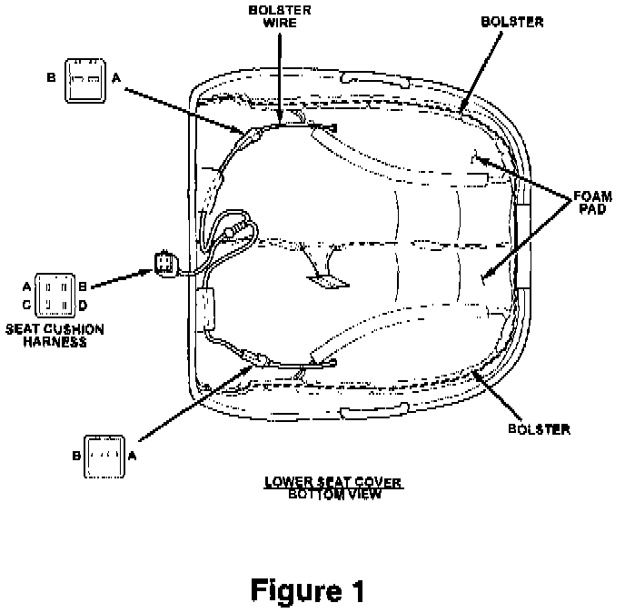

Heated Seat - Inoperative: Overview
NUMBER: 08-03-99GROUP: Electrical
DATE: Feb, 5, 1999
SUBJECT:
Inoperative heated seat.
OVERVIEW:
This bulletin involves installing heated seat heating element repair kits.
MODELS:
1996 - 1998 (ZJ) Grand Cherokee
1996 - 1998 (ZJ) Grand Cherokee
SYMPTOM/CONDITION:
The heated seat may be inoperative due to an open circuit in the heating element located in the seat cover. The condition is usually present in the seat bottom. This Technical Service Bulletin provides a Repair Procedure, which eliminates the need to replace the seat bottom cover.

DIAGNOSIS:
Disconnect the 4 way connector under the seat bottom at the rear of the seat. Check continuity between pins A and B with a digital ohm meter on the seat side of the harness (See Figure 1). The Resistance should be between .9 and 1.4 ohms. If the circuit is open, Perform the Repair Procedure. If continuity is present and the resistance value are correct and the heated seat is inoperative, further diagnosis is present. Refer to the appropriate service manual for diagnostics.
PARTS REQUIRED:
2 05015478AA Heated Seat Repair Kit (2 required per seat)
POLICY: Reimbursable within the provisions of the warranty.
TIME ALLOWANCE:
Labor Operation No: 23-20-38-90/91 1.4 hrs.
FAILURE CODE: AM - Authorized Modification